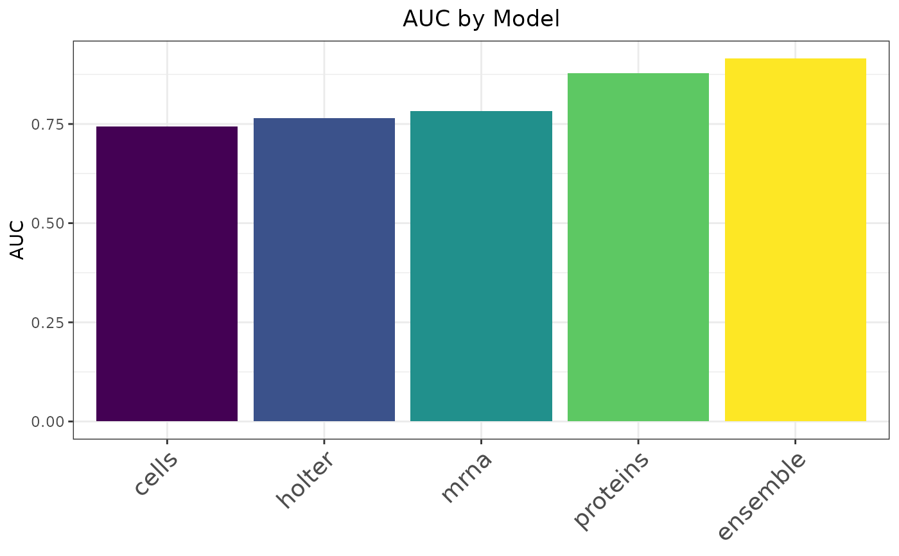

Plot metrics computed with a provided metric function
Source:R/caret_stack.R
plot_metric.caret_stack.RdThis function constructs a bar plot with the output of the compute metric method. The bars are ordered by increasing value.
Usage
# S3 method for class 'caret_stack'
plot_metric(object, metric_function, metric_name, descending = TRUE, ...)Arguments
- object
A
caret_stackobject- metric_function
A function that takes two arguments
(predictions, target)and returns a single numeric value representing the metric to compute (e.g., RMSE, accuracy, AUC).- metric_name
The name of the metric
- descending
Whether to sort in descending order. If
FALSE, the output is sorted in ascending order. Default isTRUE.- ...
Not used. Included for S3 compatibility.
Examples
# Load pre-trained example caret_stack object
data(heart_failure_stack)
# Since the example stack is a binary classifier,
# this metric function needs to take in predictions (floats) and
# ground truth (binary vector), and produce a single number.
metric_fun <- function(preds, target) {
pROC::roc(response = target, predictor = preds, quiet = TRUE)$auc
}
plot_metric(heart_failure_stack, metric_fun, "AUC")
